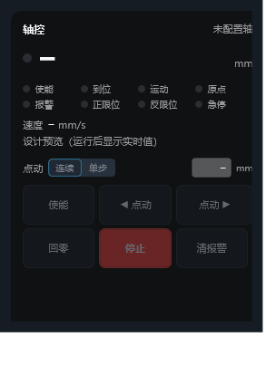
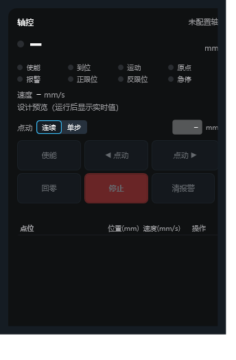
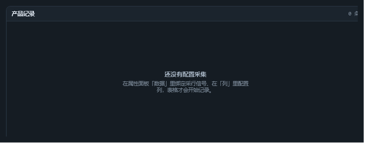

第三轮控件会审
数据表格 · 轴面板 · 报警条 —— 四个角色（应用工程师 / 前端设计 / 运动安全 / 实现）的证据与裁定
ScadaRuntimeContext（采集信号 + 报警引擎 + 轴源），
本轮未装配，所以这些结论标了 挂起，补图后才能定级。
轴面板 Hmi.AxisPanel
唯一会动设备的图元。证据最充分：未配置态下状态区、命令区、点动模式全都可见。



— mm 一上一下，没有"目标/当前"字样。违反 R99「下发 ≠ 到位」的表达要求。数据表格 Hmi.DataGrid
报警历史 / 日志 / 追溯清单全靠它；技术债最密（R19 / R21 / R159）。



NewestFirst 已存在，行为未在真机确认）。报警条 Hmi.AlarmBanner
操作员第一眼看到的报警面。与「报警汇总表」分工：条=知道有事，表=处理掉。


新版：自动滚动（2026-10-25 已实现）
原来的问题不只是"不滚"：OnBeat 第一句是 if (!_isFlashing) return;，
只有需要闪烁的报警才走节拍——一条不闪的报警条永远停在第一屏，连刷新都不做。
现在改成按固定节奏逐行下移、到底回顶：
↑ 示意（每行停留 2.5 秒、到底回顶）。条数不足一屏时不滚——否则"滚了个寂寞"，还让人以为漏了报警。
| 新增属性 | 默认 | 说明 |
|---|---|---|
AutoScroll | True | 条数超过一屏时自动逐行下移、到底回顶；关掉则停在原处手动滚 |
SecondsPerRow | 2.5 | 每行停留秒数（0.5~30）。太小看不清、太大像没在动 |
实现细节：位置按累计时长取模算（与闪烁相位同一理由），漏拍/卡顿不会越走越偏；
可见行数按 ViewportHeight ÷ 47px 算；断言 [AB-S1]~[AB-S3] 已钉住。
没做的两件：① 横向跑马灯（会丢掉时间与状态两列，与"三重编码"的结论冲突）； ② 用户手动拖动后暂停自动滚动（现在会被下一拍拽回）——建议与"新报警插入是否打断阅读"一起在下一批处理。
改为横向跑马灯（同日，按用户裁定 · 已实现）
用户反馈：要的是从右往左滚、不带确认、只要触发条件为 ON 就在队列里， 而且纵向卡片太占空间。所以形态改成两种，默认跑马灯：
↑ 示意：单行 34px、从右往左、按严重度上色、条间用「·」隔开。 不带确认状态——确认是报警汇总表的事；这里只回答"现在有哪些报警在响"。
悬浮暂停（2026-10-26）：鼠标停在条上立刻停住，移开继续走。 恢复时扣掉暂停时长而不是清零重来——清零会让文字瞬间跳回起点，正在读的人直接跟丢。
| 属性 | 默认 | 说明 |
|---|---|---|
ScrollMode | Ticker | Ticker = 单行跑马灯（默认）；List = 卡片列表（带时间与状态，占地方） |
ScrollSpeed | 60 | 跑马灯速度（像素/秒，10~300） |
AutoScroll / SecondsPerRow | True / 2.5 | 只在 List 形态生效：逐行下移、到底回顶 |
实现要点：位移 = 视口宽 − (累计秒 × 速度) mod (文本宽 + 视口宽)，
按累计时长取模，漏拍/卡顿不会越走越偏；文字用 Run 按严重度上色；
断言 [AB-T1]（从右缘出发、走完一圈回起点）与 [AB-T2]（空文本不滚、拼接跳过空项）已钉住。
纵向自动滚动保留为 List 形态的能力（老工程配了 List 也不会变样）； 新拖入的报警条默认走跑马灯，高度建议 34~40px。
裁定表
| # | 控件 | 问题 | 级别 | 结论 |
|---|---|---|---|---|
| 1 | 轴面板 | 未配置轴时按钮必须整块禁用并给原因 | P1 | 本轮改 |
| 2 | 轴面板 | 「失能」入口缺失 | 撤销 | 不是问题：使能是切换开关 |
| 3 | 轴面板 | 状态点只靠颜色 | 撤销 | 用户裁定不改 |
| 4 | 轴面板 | 触摸命中区 32px 偏小 | P1 | 本轮改 |
| 5 | 轴面板 | 下发值 vs 实际值无标签 | P1 | 本轮改 |
| 6 | 数据表格 | 「未绑采集信号」与「无数据」文案不分 | P1 | 本轮改 |
| 7 | 数据表格 | 设计期不显示列头 | P1 | 本轮改 |
| 8 | 报警条 | 「未接报警源」与「系统正常」同形 | P1 | 本轮改 |
| 9 | 轴面板 | 停止按钮权重 / 位置 | P2 | 下一批 |
| 10 | 轴面板 | 点动模式分组含糊 | P2 | 下一批 |
| 11 | 数据表格 | 禁用态不可辨 | P2 | 下一批 |
| 12 | 报警条 | 空态无图标 | P2 | 下一批 |
| 15 | 报警条 | 自动滚动（逐行下移、到底回顶） | 已实现 | 本轮已改 |
| 13 | 三个 | 所有「需运行态图」条目 | 挂起 | 补图后定级 |
| 14 | 数据表格 | 「采信」笔误 | P3 | 顺手改 |
表决：P1 共 6 条进本轮（原 8 条，A1 状态点与 A2 失能入口经用户裁定撤销；S3 不处理——需要时在流程里断使能）。 P2 四条排下一批；P3 两条顺手改。排序原则 现场安全 > 可读性 > 密度。
下一步
① 补运行态出图：装配 ScadaRuntimeContext（采集信号 / 活动报警 / 轴源），把 4 条挂起项定级。
② 按裁定表改 8 条 P1：每条配断言——按钮禁用、命名件齐全、MinHeight ≥ 44、文字标签、两种空态文案不同、设计期渲染列头。
③ 重跑 ScadaChecks 并在 docs/code-changes/ 留档。
文字版记录：docs/UI设计基线/scada-third-round-review/评审记录.md；现状包：同目录 README.md。